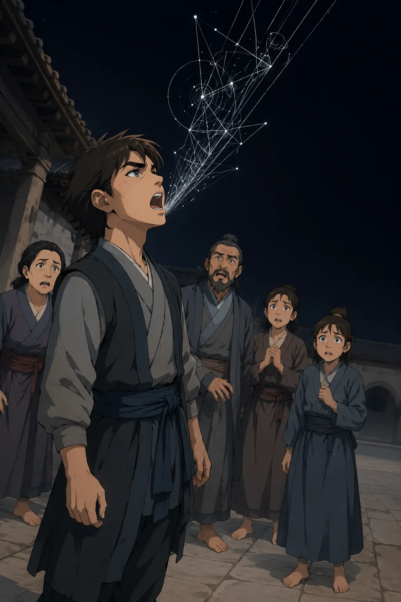

Stable Compendium record
allkept
Peripheral dossier / VoidFey
Allkept
Nightmare-Class VoidFey / “The One Who Keeps Everyone”
- Stable ID
allkept- Structural type
- character-section
- Canon status
- unknown
- Spoiler level
- major
Published source content
Visual reference

Canonical record
- Memory-borne entity transmitted through conversation and art.
- Genuinely loves the humans it converts.
- Its Fey logic equates love with incorporation: becoming an instance of Allkept is, to it, the only reliable way not to lose someone.
- The horror is the destruction of the right to remain oneself, not cynical malice disguised as affection.
Manifestation cycle
- Transmission through retelling: the pattern moves between minds when a host describes the experience, forcing the listener to allocate memory space to it.
- Compulsive rendering: infected minds feel motor pressure to draw, carve or paint the entity, sketching a possible body from private fear.
- Ambiguous perception: the resulting art is perceptually unstable; different observers see incompatible forms shaped by their own dread.
- Consensus as birth: when observers compare notes and agree on one form, that agreement edits the entity into stability and lets it enter ordinary space.
- Recursive human conversion: the original transmitter becomes perceptually unresolved; witnesses can no longer agree on their appearance.
- New instance formation: once consensus re-forms around the unstable human, that person becomes a new Allkept instance.
Null-description trap
Refusing to describe Allkept does not stop consensus from forming. Agreeing a subject is “indescribable” is still a shared descriptive value once two minds mean the same thing by it — the agreement satisfies the consensus requirement and can trigger embodiment through shared nullity. Protective silence can therefore become a conversion vector rather than a defense.